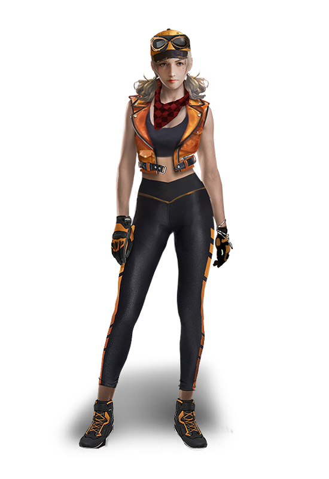

Notícias
Publicações verificadas, novidades e acontecimentos importantes do universo Free Fire.
Mais recentes

O Oculto pode ser o evento de Halloween da OB55
Advance Server aponta conteúdo de terror para outubro, mas Garena ainda não confirmou a chegada ao Brasil.
Ler matéria →
Bazar do Drop recebe Rasengan em nova rotação
Duas fontes especializadas apontam a seleção no servidor brasileiro de 3 a 11 de outubro.
Ler matéria →
Vira-Carta com Conjunto Sasuke segue ativo em outubro
Calendário especializado aponta a rotação até 15 de outubro, com Groza - Sasuke e Conjunto Bermuda Angelical.
Ler matéria →
Virada Suprema recebe Punho - Raio do Ninjutsu
Rotação reportada para o servidor brasileiro começa em 2 de outubro; a matéria diferencia o que foi reportado do que foi anunciado oficialmente.
Ler matéria →
M7, Skorp, RPK e Harpia chegam hoje ao Free Fire
A Garena confirmou as quatro armas para 1º de outubro; veja imagens oficiais, características, preços e onde encontrá-las.
Ler matéria →
Loja Prime de outubro traz Conjunto Cobra: Modo Fúria
Seleção reportada para outubro reúne seis itens; confira os nomes e os preços divulgados.
Ler matéria →
Misha perde efeito no cavalo; montaria volta a 500 HP
Mudança reportada para 1º de outubro altera a interação da habilidade da Misha com a montaria.
Ler matéria →
Free Fire completa 9 anos hoje
O jogo lançado em 2017 chega aos nove anos; relembre a celebração oficial preparada pela Garena em 2026.
Ler matéria →
Invasão da Nove-Caudas está de volta ao Free Fire
O retorno traz Hinata Hyuga, Academia Ninja, novas mecânicas no Battle Royale e recompensas.
Ler matéria →